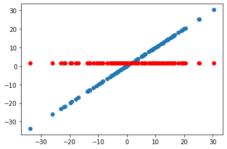
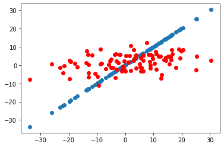
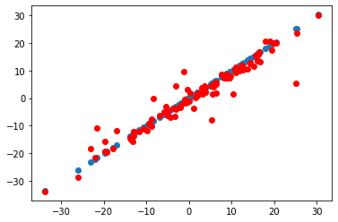

Wide and deep learning¶
30 min | Última modificación: Julio 12, 2019.
Depedencias¶
[6]:
import matplotlib.pyplot as plt
import numpy as np
%matplotlib inline
[7]:
import tensorflow as tf
## Establece el nivel de reporte en
## pantalla de TensorFlow
tf.logging.set_verbosity(tf.logging.ERROR)
Dataset¶
[8]:
##
## datos del problema propuesto
##
from sklearn.datasets import make_regression
X, d = make_regression(
n_samples=100, #
n_features=2, #
n_informative=1, #
bias=0.0, # intercepto
effective_rank=None, # numero de vectores singulares para explicar los datos
tail_strength=0.9, # ? importancia relativa de las colas
noise=12.0, #
shuffle=False, # ?
coef=False, # ?coeficientes de la regresion
random_state=12136) #
d += 0.05 * X[:,0] ** 2
d += 0.07 * X[:,1] ** 2
d += 0.81 * X[:,0] * X[:,1]
print('X:')
print(X[0:5,:])
print('')
print('d:')
print(d[0:5])
X:
[[-0.07548221 0.25457976]
[-1.67790459 0.02934494]
[-1.26015485 -1.17999447]
[ 1.26116815 -0.44973402]
[ 0.44115888 0.3959695 ]]
d:
[ 15.57728739 -12.90315327 5.52585089 19.93503306 16.26098572]
Funciones de entrada a los estimadores¶
[20]:
## Indica que las columnas 'x' son numéricas
column_x0 = tf.feature_column.numeric_column("x0")
column_x1 = tf.feature_column.numeric_column("x1")
## Función de entrada para el estimador.
## Debe retornar una tupla con (entradas, salida).
## Note que features es un diccionario que contine
## una paraja clave-valor por cada variable
## independiente
def input_fn_train():
features={
'x0': X[:,0],
'x1': X[:,1]}
labels=d
return features, labels
## Esta función es igual que la anterior, pero
## retorna únicamente el data.frame de variables
## independientes
def input_fn_predict():
features={
'x0': X[:,0],
'x1': X[:,1]}
return features
Baseline regressor¶
[18]:
## Construye el estimador base, cuya salida es
## una constante.
regressor = tf.estimator.BaselineRegressor()
## Entrenamiento
regressor.train(
input_fn=input_fn_train, # función de entrada
steps=100) # número de iteraciones (optimización)
## Pronostica para nuevos valores. En este
## caso se usa la misma función de entrada que
## para el entrenamiento.
results = regressor.predict(
input_fn=input_fn_predict)
## Imprime los resultados.
forecasts = []
print('Pronosticos:')
for i, value in zip(X, results):
## Value es un diccionario por cada posible valor de x.
## El contenido de la clave predictions es un vector.
print(' {:7.4f} {:7.4f}'.format(i[0], value['predictions'][0]))
## Se almacenan los valores pronosticodos en una lista
## para poder graficarlos
forecasts += value['predictions'].tolist()
## Grafica los puntos de la muestra de datos
plt.plot(d, d, 'o')
## Grafica los pronósticos del modelo
plt.plot(d, forecasts, 'o', color = 'red');
## Imprime los estadísticos de error.
metrics = regressor.evaluate(input_fn=input_fn_train, steps=1)
print('')
print('Métricas de error')
for key in sorted(metrics.keys()):
print(" {:16s}: {:10.4f}".format(key, metrics[key]))
print('')
Pronosticos:
-0.0755 1.6371
-1.6779 1.6371
-1.2602 1.6371
1.2612 1.6371
0.4412 1.6371
-0.0354 1.6371
0.5158 1.6371
0.1691 1.6371
-0.3039 1.6371
0.2303 1.6371
-1.5080 1.6371
-1.4532 1.6371
0.4854 1.6371
1.1130 1.6371
-0.2514 1.6371
-0.3076 1.6371
0.5264 1.6371
-0.6606 1.6371
-1.4774 1.6371
0.9704 1.6371
0.8731 1.6371
-0.1800 1.6371
-0.7563 1.6371
0.1899 1.6371
0.2248 1.6371
0.5047 1.6371
-0.1888 1.6371
-1.1621 1.6371
-0.3132 1.6371
0.6452 1.6371
-0.8411 1.6371
1.4799 1.6371
1.6152 1.6371
-0.1960 1.6371
0.6913 1.6371
0.6560 1.6371
1.0014 1.6371
0.5624 1.6371
1.0148 1.6371
-0.0292 1.6371
1.1079 1.6371
-1.2908 1.6371
-0.2243 1.6371
0.9131 1.6371
0.3312 1.6371
-1.1015 1.6371
1.3994 1.6371
-0.8867 1.6371
1.5016 1.6371
0.1722 1.6371
0.2059 1.6371
-0.6336 1.6371
0.3863 1.6371
-1.5046 1.6371
-0.3101 1.6371
2.0897 1.6371
1.0251 1.6371
-0.6482 1.6371
0.4749 1.6371
-2.3149 1.6371
-0.5070 1.6371
-1.6847 1.6371
0.6950 1.6371
0.6825 1.6371
-0.5484 1.6371
0.7278 1.6371
0.9796 1.6371
0.5068 1.6371
0.8591 1.6371
0.2997 1.6371
0.3486 1.6371
-0.3272 1.6371
-0.7158 1.6371
-0.4206 1.6371
-1.3160 1.6371
-0.8706 1.6371
-0.6253 1.6371
0.7202 1.6371
-0.6693 1.6371
0.8148 1.6371
0.3871 1.6371
0.4134 1.6371
0.3878 1.6371
-0.3076 1.6371
0.8514 1.6371
-1.3045 1.6371
1.0488 1.6371
-0.3478 1.6371
0.5737 1.6371
-0.1526 1.6371
-1.7556 1.6371
-0.9506 1.6371
1.1713 1.6371
0.5777 1.6371
-0.0925 1.6371
1.1041 1.6371
1.5026 1.6371
-0.1988 1.6371
-0.8965 1.6371
0.6973 1.6371
Métricas de error
average_loss : 153.8436
global_step : 100.0000
label/mean : 1.6372
loss : 15384.3643
prediction/mean : 1.6371

Linear Regressor¶
[22]:
## Construye el estimador lineal, cuya salida es
## el resultado de la regresión lineal entre
## x y y.
regressor = tf.estimator.LinearRegressor(
feature_columns = [column_x0, column_x1],
optimizer = tf.train.AdamOptimizer(
learning_rate = 0.2))
## Entrenamiento
regressor.train(
input_fn=input_fn_train,
steps=1000)
## Pronostica para nuevos valores. En este
## caso se usa la misma función de entrada que
## para el entrenamiento.
results = regressor.predict(
input_fn=input_fn_predict)
## Imprime los resultados.
forecasts = []
print('Pronosticos:')
for i, value in zip(X, results):
## Value es un diccionario por cada posible valor de x.
## El contenido de la clave predictions es un vector.
print(' {:7.4f} {:7.4f}'.format(i[0], value['predictions'][0]))
## Se almacenan los valores pronosticodos en una lista
## para poder graficarlos
forecasts += value['predictions'].tolist()
## Grafica los puntos de la muestra de datos
plt.plot(d, d, 'o')
## Grafica los pronósticos del modelo
plt.plot(d, forecasts, 'o', color = 'red');
## Imprime los estadísticos de error.
metrics = regressor.evaluate(input_fn=input_fn_train, steps=1)
print('')
print('Métricas de error')
for key in sorted(metrics.keys()):
print(" {:16s}: {:10.4f}".format(key, metrics[key]))
print('')
Pronosticos:
-0.0755 0.6885
-1.6779 -6.5234
-1.2602 -3.2336
1.2612 7.6961
0.4412 2.9372
-0.0354 -1.3694
0.5158 1.9200
0.1691 2.1240
-0.3039 1.1970
0.2303 3.8083
-1.5080 -4.6594
-1.4532 -6.0978
0.4854 2.6390
1.1130 8.4403
-0.2514 1.3201
-0.3076 -0.5240
0.5264 5.2608
-0.6606 -1.0702
-1.4774 -6.8697
0.9704 7.5170
0.8731 5.4933
-0.1800 -1.8034
-0.7563 -3.1867
0.1899 2.5804
0.2248 1.8732
0.5047 4.3666
-0.1888 0.1824
-1.1621 -3.4233
-0.3132 -1.3858
0.6452 4.8510
-0.8411 -0.6253
1.4799 8.4954
1.6152 10.7784
-0.1960 0.8604
0.6913 5.3250
0.6560 5.7215
1.0014 8.2076
0.5624 2.4769
1.0148 5.6354
-0.0292 0.7079
1.1079 5.9631
-1.2908 -4.1310
-0.2243 1.5290
0.9131 5.8509
0.3312 4.2134
-1.1015 -4.4079
1.3994 8.6723
-0.8867 -1.4153
1.5016 7.7460
0.1722 0.1958
0.2059 2.2415
-0.6336 -1.0550
0.3863 3.2924
-1.5046 -5.1541
-0.3101 0.6175
2.0897 12.3808
1.0251 5.1777
-0.6482 -0.2127
0.4749 6.1596
-2.3149 -10.9652
-0.5070 -1.4058
-1.6847 -7.0513
0.6950 4.8012
0.6825 3.4037
-0.5484 -1.8135
0.7278 5.1509
0.9796 5.8473
0.5068 4.9863
0.8591 4.6714
0.2997 2.9338
0.3486 5.2308
-0.3272 0.7972
-0.7158 -1.6289
-0.4206 -2.9710
-1.3160 -3.4208
-0.8706 -2.2535
-0.6253 -2.2872
0.7202 4.3620
-0.6693 -2.6252
0.8148 3.5686
0.3871 3.7678
0.4134 2.5483
0.3878 2.4789
-0.3076 -1.3210
0.8514 4.6870
-1.3045 -7.4374
1.0488 5.8632
-0.3478 -1.9616
0.5737 4.9481
-0.1526 0.7514
-1.7556 -7.9067
-0.9506 -2.3784
1.1713 5.9893
0.5777 5.6839
-0.0925 2.1733
1.1041 5.4631
1.5026 8.6709
-0.1988 0.8926
-0.8965 -2.8223
0.6973 4.3072
Métricas de error
average_loss : 133.7289
global_step : 1000.0000
label/mean : 1.6372
loss : 13372.8887
prediction/mean : 1.6372

Wide and deep¶

Fuente: https://ai.googleblog.com/2016/06/wide-deep-learning-better-together-with.html
[27]:
## Construye el estimador lineal, cuya salida es
## el resultado de la regresión lineal entre
## x y y.
regressor = tf.estimator.DNNLinearCombinedRegressor(
linear_feature_columns = [column_x0, column_x1],
linear_optimizer = tf.train.AdamOptimizer(
learning_rate = 0.2),
dnn_feature_columns=[column_x0, column_x1],
dnn_hidden_units=[50, 20],
dnn_optimizer = tf.train.AdamOptimizer(
learning_rate = 0.2))
## Entrenamiento
regressor.train(
input_fn=input_fn_train,
steps=10000)
## Pronostica para nuevos valores. En este
## caso se usa la misma función de entrada que
## para el entrenamiento.
results = regressor.predict(
input_fn=input_fn_predict)
## Imprime los resultados.
forecasts = []
print('Pronosticos:')
for i, value in zip(X, results):
## Value es un diccionario por cada posible valor de x.
## El contenido de la clave predictions es un vector.
print(' {:7.4f} {:7.4f}'.format(i[0], value['predictions'][0]))
## Se almacenan los valores pronosticodos en una lista
## para poder graficarlos
forecasts += value['predictions'].tolist()
## Grafica los puntos de la muestra de datos
plt.plot(d, d, 'o')
## Grafica los pronósticos del modelo
plt.plot(d, forecasts, 'o', color = 'red');
## Imprime los estadísticos de error.
metrics = regressor.evaluate(input_fn=input_fn_train, steps=1)
print('')
print('Métricas de error')
for key in sorted(metrics.keys()):
print(" {:16s}: {:10.4f}".format(key, metrics[key]))
print('')
Pronosticos:
-0.0755 15.4928
-1.6779 -12.1992
-1.2602 1.4107
1.2612 19.9385
0.4412 15.8983
-0.0354 4.2207
0.5158 7.3275
0.1691 -1.3240
-0.3039 -14.5015
0.2303 17.3951
-1.5080 -11.2162
-1.4532 -11.6763
0.4854 1.8158
1.1130 20.0774
-0.2514 -3.2609
-0.3076 -10.8196
0.5264 3.1477
-0.6606 -7.9798
-1.4774 -3.6884
0.9704 10.3450
0.8731 -12.0863
-0.1800 7.2235
-0.7563 9.7235
0.1899 5.3091
0.2248 -19.6286
0.5047 13.9041
-0.1888 -5.0729
-1.1621 -1.2178
-0.3132 -6.4407
0.6452 12.0191
-0.8411 -1.6420
1.4799 16.8351
1.6152 1.8277
-0.1960 -0.2066
0.6913 5.6117
0.6560 -2.4343
1.0014 3.6272
0.5624 12.6134
1.0148 -3.5090
-0.0292 4.4261
1.1079 9.1347
-1.2908 -12.2621
-0.2243 -3.5757
0.9131 8.4496
0.3312 12.7081
-1.1015 -21.6983
1.3994 -7.7418
-0.8867 -18.2874
1.5016 -15.1131
0.1722 -13.6500
0.2059 -3.9383
-0.6336 -11.8738
0.3863 -4.7450
-1.5046 10.7480
-0.3101 -28.6082
2.0897 8.6068
1.0251 4.9572
-0.6482 8.6634
0.4749 13.1477
-2.3149 -9.3479
-0.5070 20.5495
-1.6847 10.1387
0.6950 23.6487
0.6825 1.5631
-0.5484 -0.4896
0.7278 1.6708
0.9796 -3.7822
0.5068 0.0516
0.8591 3.6735
0.2997 10.5324
0.3486 7.4069
-0.3272 -18.3214
-0.7158 2.3069
-0.4206 5.4402
-1.3160 1.8666
-0.8706 11.2268
-0.6253 3.1179
0.7202 13.5116
-0.6693 5.5154
0.8148 8.1314
0.3871 4.7182
0.4134 30.1397
0.3878 -19.2900
-0.3076 -6.8548
0.8514 11.5303
-1.3045 -15.5830
1.0488 -15.8551
-0.3478 -6.1658
0.5737 9.8856
-0.1526 -10.3072
-1.7556 -33.8399
-0.9506 4.2646
1.1713 -6.4851
0.5777 7.4366
-0.0925 -2.9070
1.1041 2.1055
1.5026 20.5674
-0.1988 1.5990
-0.8965 0.9025
0.6973 4.3859
Métricas de error
average_loss : 13.1665
global_step : 10000.0000
label/mean : 1.6372
loss : 1316.6450
prediction/mean : 0.9487
